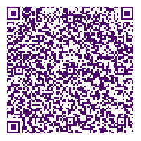

QR-Code: Die Brücke zwischen Print und Digital
Auf Werbeplakaten, Messeausweisen oder auf Visitenkarten: Immer häufiger fallen einem kleine Quadrate aus schwarzen und weißen, manchmal auch farbigen Pixeln ins Auge, QR-Code heißen die Pixelquadrate. Hinter diesen wirr wirkenden Pixelfeldern verbirgt sich – auf kleinem Raum – ganz schön viel Information. QR steht für „Quick Response” – zu Deutsch: schnelle Antwort.

Mit einem Smartphone oder Tablet-PCs lässt sich die Information hinter den schwarzen und weißen Punkten schnell abrufen, speichern und weitergeben.
So kann man beispielsweise Internetseiten, deren Adressen im Code hinterlegt sind, schnell öffnen – die entsprechenden Apps erkennen automatisch, dass es sich um eine URL handelt. Die URL öffnet sich durch anklicken im Browser. Ist im Code eine Visitenkarte gespeichert, können die Daten direkt verwendet oder gespeichert werden. Lästiges Abtippen und vor allem häufiges Vertippen entfallen. Ein weiterer großer Vorteil: Sowohl das Abrufen, als auch das Erstellen eines QR-Codes sind lizenz- und kostenfrei.
Der QR-Code macht’s möglich: Papier, Zeit und Nerven sparen
QR-Codes können auf allen Produkten zum Einsatz kommen, die sich bedrucken lassen: von der Visitenkarte, über den Flyer bis zur Kaffeetasse und zum T-Shirt ist die Abbildung des Codes möglich. Aber auch für den digitalen, papierlosen Einsatz eignet er sich:
 
Wenn Sie das nächste Mal einen Vortrag halten, laden Sie vorher das Handout zur Präsentation auf Ihre Homepage, erstellen für die URL einen QR-Code und fügen diesen in Ihren Vortrag ein. Ihre Zuhörer können den Code auslesen, das Handout direkt herunterladen, am Tablet-PC lesen und sich direkt Notizen machen. Das Ausdrucken von Handouts ist nicht mehr notwendig und auch das Zuordnen von Papiernotizen zu digitalen Präsentationen entfällt. Das spart nicht nur Papier, sondern auch Zeit und Nerven.
Viele Unternehmer haben – insbesondere nach Veranstaltungen, auf denen man viele neue Kontakte knüpft – ein Backlog beim anschließenden Einpflegen der neuen Daten. Oft liegen die Visitenkarten wochenlang herum. Wenn Sie so oft wie möglich die Chance nutzen, QR-Codes zu scannen, statt papierne Visitenkarten einzusammeln, spart das Ihnen und Ihren Mitarbeitern eine Menge Zeit und Sie haben die Kontaktdaten sofort verfügbar.
Visitenkarte der Zukunft?
Vielleicht noch zu avantgardistisch, aber denkbar: Lassen Sie zukünftig nur noch eine Visitenkarte drucken, nicht Hunderte, die ausschließlich einen QR-Code abbildet, der Ihre Kontaktdaten enthält. Diese eine Karte zücken Sie und bitten Ihre Geschäftspartner freundlich ums Scannen und Speichern der enthaltenen Daten.
© Mira Marie Hische
Im nächsten Artikel erfahren Sie, wie Sie schnell und einfach QR-Codes lesen und erzeugen können.
Weitere Artikel

Digitale Tools für Zusammenarbeit im Office
E-Mail, Digitale Ablage und eine Branchensoftware sind schon lange nicht mehr genug für effiziente Zusammenarbeit. Doch bevor Sie sich in einem Dschungel an digitalen Werkzeugen verlieren, sollten Sie sich über die Systematik …

Veränderung braucht Gewohnheit
Sowohl im Berufs-als auch im Privatleben sind wir ständig im Veränderungsmodus. Manche Veränderungen wollen wir umsetzen, manche müssen wir mitmachen. Wir alles wissen, dass Veränderung nie leicht sind und je länger wir etwas auf …